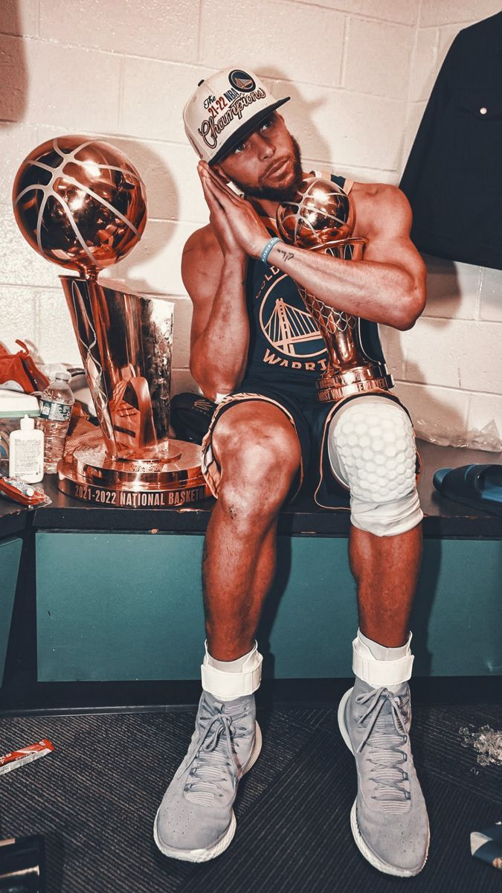

A NBA (National Basketball Association) é uma das maiores e mais
famosas ligas de basquete do mundo. Sua história é rica e cheia
de eventos importantes, com muitos jogadores lendários que ajudaram
a construir sua reputação global.
A National Basketball Association (em português: Associação Nacional de Basquetebol; abreviação oficial: NBA) é a principal liga de basquetebol profissional da América do Norte. Com 30 franquias (29 nos Estados Unidos e 1 no Canadá), a NBA também é considerada a principal liga de basquete do mundo. É um membro ativo da USA Basketball (USAB),[2] que é reconhecida pela FIBA (a Federação Internacional de Basquetebol) como a entidade máxima e organizadora do basquetebol nos Estados Unidos. A NBA é uma das 4 'major leagues' de esporte profissional na América do Norte. Os jogadores da NBA são os atletas mais bem pagos do mundo, por salário médio anual.
A liga foi fundada na cidade de Nova Iorque em 6 de Junho de 1946, como a Basketball Association of America (BAA).[4] A liga adotou o nome de National Basketball Association em 1949 quando se fundiu com a rival National Basketball League (NBL). A liga tem diversos escritórios ao redor do mundo, além de vários dos próprios clubes fora da sede principal na Olympic Tower localizada na Quinta Avenida 645. Os estúdios da NBA Entertainment e da NBA TV são localizados em Secaucus, Nova Jérsia.
Atualmente a liga é transmitida em Portugal pela Sport TV e pela NBA TV, e no Brasil pela Band na TV aberta, e pela ESPN na TV fechada, além de transmissões no canal do YouTube (NBA Brasil) e no Streaming pelo Amazon Prime Video. Nos Estados Unidos, as emissoras são NBA TV, TNT e ESPN, além da transmissão dos principais jogos pela ABC. O pacote NBA League Pass, que permite ao assinante assistir todos os jogos da liga ao vivo e em alta definição, é disponibilizado para assinatura em todo o mundo.
Criação e fusão (1946–1956)
A BAA (Basketball Association of America) foi fundada em 1946 pelos proprietários das principais arenas de Hóquei no gelo no Nordeste e no Centro-Oeste dos Estados Unidos e Canadá. Em 1 de novembro de 1946, em Ontário, Canadá, o Toronto Huskies recebeu o New York Knickerbockers, no Maple Leaf Gardens, em um jogo que a NBA agora considera como o primeiro jogo em sua história.[5] Apesar de ter havido tentativas anteriores de criar ligas de basquete profissional, incluindo a American Basketball League e a NBL, a BAA foi a primeira liga à tentar jogar em grandes arenas nas grandes cidades. Durante seus primeiros anos, a qualidade do jogo na BAA não foi significativamente melhor do que nas ligas concorrentes ou contra os principais clubes independentes, como o Harlem Globetrotters. Por exemplo, o finalista da ABL de 1948, Baltimore Bullets, mudou-se para a BAA e conquistou o título da liga em 1948, e o Minneapolis Lakers, campeão da NBL em 1948, ganhou o título da BAA em 1949.
Em 3 de agosto de 1949, a BAA aceitou se fundir com a NBL, criando a nova National Basketball Association (NBA).[7] A nova liga tinha 17 franquias localizadas em uma mistura de cidades grandes e pequenas,[7] bem como grandes e pequenos ginásios. Em 1950, a NBA se consolidou em 11 franquias, um processo que continuou até 1953-54, quando o campeonato atingiu o seu menor tamanho de oito franquias, os quais todos ainda estão na liga (New York Knicks, Boston Celtics, Golden State Warriors, Los Angeles Lakers, Sacramento Kings, Detroit Pistons, Atlanta Hawks, e Philadelphia 76ers). O processo de contração fez com que as franquias das menores cidades se movessem para grandes mercados. Os Hawks saíram de Tri-Cities (conhecidas como Quad Cities) para Milwaukee em 1951 e então para St. Louis, Missouri em 1955; os Royals foram de Rochester para Cincinnati (em 1957); e os Pistons de Fort Wayne, Indiana para Detroit (em 1957).
Enquanto isso, o Nipo-americano Wataru Misaka quebrou a barreira de raças na NBA na temporada 1948-49 quando jogou pelos New York Knicks, 1950 é conhecido como o ano em que a NBA se integrou. Em 26 de Abril de 1950, Harold Hunter assinou com os Washington Capitols, se tornando o primeiro Afro-americano a assinar um contrato com qualquer time na NBA na história.[8][9] Hunter foi cortado durante o training camp,[8][10] porém vários Afro-americanos começaram a jogar na liga no final daquele ano, como Chuck Cooper com os Celtics, Nathaniel Clifton com os Knicks e Earl Lloyd com os Washington Capitols. Nesse meio tempo, os Minneapolis Lakers, liderados pelo pivô George Mikan, ganhou 5 títulos da NBA e estabilizou o time pela primeira dinastia da NBA.[11] Para encorajar os arremessos e desencorajar "calmaria", a NBA criou o cronômetro de 24 segundos em 1954.[12] Se um time não tentar um arremesso (ou não encostar no aro), em 24 segundos de jogada, a jogada acaba e a posse de bola passa para seu oponente.
Fases importantes da história da NBA:
Anos Iniciais (1946-1950)
Anos Iniciais (1946-1950) A NBA começou com uma base de fãs limitada e enfrentou dificuldades financeiras, mas continuou a crescer com o tempo.
Times como o Boston Celtics e o Minneapolis Lakers se destacaram nos primeiros anos da liga.
Domínio dos Celtics e Lakers (1950-1970)
Durante as décadas de 1950 e 1960, o Boston Celtics dominou a liga, com Bill Russell liderando a equipe e ganhando 11 títulos da NBA.
Os Los Angeles Lakers, com lendas como Jerry West e Wilt Chamberlain, também começaram a ganhar destaque.
A Era de Magic e Bird (1980-1990)
Os anos 80 foram dominados por duas figuras: Magic Johnson, dos Los Angeles Lakers, e Larry Bird, do Boston Celtics. Eles ajudaram a popularizar ainda mais a NBA e a transformá-la em uma liga de entretenimento global.
Durante esse período, a NBA viu um aumento significativo na sua popularidade, com Magic e Bird sendo os maiores rivais.
Michael Jordan e a Dinastia dos Bulls (1990-2000)
Michael Jordan, considerado por muitos o maior jogador de basquete de todos os tempos, transformou a NBA nos anos 90. Ele liderou o Chicago Bulls para 6 campeonatos na década, sendo o principal jogador durante as vitórias de 1991 a 1998.
Jordan popularizou o esporte mundialmente e ajudou a aumentar a visibilidade da NBA.
A Era Moderna e a Evolução (2000-Presente)
Nos anos 2000, surgiram novos jogadores talentosos como Kobe Bryant, LeBron James e Kevin Durant, que dominaram a liga.
A NBA também se tornou cada vez mais internacional, com jogadores de todo o mundo, como Dirk Nowitzki da Alemanha e Giannis Antetokounmpo da Grécia, se destacando.
Jogadores Lendários da NBA
A NBA tem uma longa lista de jogadores que ajudaram a moldar sua história. Aqui estão alguns dos mais famosos e influentes:
Michael Jordan
Altura: 1,98 m
Envergadura: 2,13 m
Peso: Aproximadamente 98 kg (pode variar dependendo da fase da carreira)
Posição: Ala-armador / Ala (Shooting Guard / Small Forward)
Data de nascimento: 17 de fevereiro de 1963
Local de nascimento: Brooklyn, Nova York, EUA
Faculdade frequentada: Universidade da Carolina do Norte (UNC)
Equipe universitária: Tar Heels
Posição no NBA Draft de 1984: 3ª escolha geral
Equipe que o selecionou: Chicago Bulls
Escola: Emsley A. Laney High School, Wilmington, Carolina do Norte
Times: Chicago Bulls (1984-1993, 1995-1998), Washington Wizards (2001-2003)
Títulos da NBA: 6 títulos da NBA com o Chicago Bulls (1991, 1992, 1993, 1996, 1997, 1998).
Principais Conquistas: 5 MVPs (1988, 1991, 1992, 1996, 1998)., 10 títulos de artilheiro da NBA, o que significa que ele foi o maior pontuador da liga durante 10 (1987–1993, 1996–1998)., 14 seleções para o All-Star Game (1985-1993, 1996-1998, 2002, 2003) 10 vezes foi selecionado para o time ideal da NBA (All-NBA First Team).
Legado: Impacto Global: Jordan foi crucial para o crescimento da NBA em todo o mundo durante os anos 1990. Seu carisma, estilo de jogo e habilidade atraíram fãs ao redor do planeta, ajudando a popularizar a liga globalmente.
Marca Air Jordan: A linha de tênis "Air Jordan" da Nike, lançada em 1985, se tornou uma das mais icônicas e lucrativas de todos os tempos, contribuindo significativamente para a marca Jordan e sua fortuna fora das quadras.
Cultura e Mídia: Michael Jordan teve uma enorme influência cultural, aparecendo em filmes, como Space Jam (1996), que uniu o basquete e o entretenimento de forma única. Sua popularidade transcendeu o esporte, tornando-o um ícone global.
Mentalidade de Competição: Sua "mentalidade de vencedor", combinada com uma ética de trabalho incansável, influenciou gerações de atletas em diversos esportes, além de ser amplamente reconhecida como um dos maiores exemplos de liderança e superação no esporte.
Retorno à NBA: Após se retirar em 1999, Jordan voltou à NBA com os Washington Wizards de 2001 a 2003, embora seu impacto não tenha sido o mesmo. No entanto, sua presença e influência continuam sendo uma parte importante de sua história.
Proprietário: Depois de sua aposentadoria, Michael Jordan se tornou proprietário majoritário do Charlotte Hornets (anteriormente conhecido como Charlotte Bobcats), onde tem influenciado o futuro da franquia e do basquete..
LeBron James
Altura: 2,06 m
Envergadura: 2,18 m
Peso: Aproximadamente 113 kg
Posição: Ala (Small Forward) / Armador (Point Guard)
Data de nascimento: 30 de dezembro de 1984
Local de nascimento: Akron, Ohio, EUA
Faculdade frequentada: LeBron James não frequentou a faculdade, pois se declarou elegível para o NBA Draft diretamente do ensino médio.
Posição no NBA Draft: 1ª escolha geral no Draft de 2003
Equipe que o selecionou: Cleveland Cavaliers
Escola: St. Vincent-St. Mary High School, em Akron, Ohio
Times: Cleveland Cavaliers (2003–2010), Miami Heat (2010–2014), Los Angeles Lakers (2018–presente)
Títulos da NBA:4 títulos da NBA: 2 com o Miami Heat (2012, 2013)1 com o Cleveland Cavaliers (2016)1 com o Los Angeles Lakers (2020)
Principais Conquistas:4 MVPs das Finais da NBA (2012, 2013, 2016, 2020)., 19 vezes All-Star (2005–2023), sendo uma das figuras mais consistentes em jogos All-Star., Medalha de Ouro Olímpica em 2008 (Pequim), 2012 (Londres) e 2016 (Rio de Janeiro), conquistando três medalhas de ouro para a seleção dos Estados Unidos..
Legado: Consistência e Longevidade: LeBron James é amplamente reconhecido pela sua incrível longevidade e capacidade de se manter no topo do basquete por mais de duas décadas. Ele continua sendo uma força dominante, mesmo com 38 anos, o que é um feito impressionante no esporte.
Versatilidade: LeBron é considerado um dos jogadores mais versáteis da história da NBA. Sua habilidade de jogar em várias posições (de armador a ala-pivô), sua inteligência de jogo e sua capacidade de se adaptar a diferentes estilos de jogo o tornam um dos maiores de todos os tempos.
Impacto Global: Assim como Michael Jordan, LeBron também tem um impacto global imenso. Ele não só é uma superestrela do basquete, mas também um influente empresário, ativista e ícone cultural.
Filantropia e Educação: LeBron fundou a LeBron James Family Foundation, que tem ajudado milhares de crianças e famílias, além de criar a I PROMISE School, uma escola pública para crianças em Akron, Ohio. Ele tem um forte compromisso com a educação e usa sua plataforma para lutar por justiça social e igualdade.
Liderança e Mentalidade: Assim como Jordan, LeBron é conhecido por sua mentalidade competitiva. No entanto, ele também se destaca por ser um líder dentro e fora de quadra, sempre se colocando como um mentor para os mais jovens e promovendo valores de trabalho em equipe e perseverança.
Influência Cultural: LeBron James, além de sua carreira como jogador, é uma figura influente na mídia, com envolvimento em filmes, produções televisivas e até mesmo na política. Seu filme Space Jam: A New Legacy (2021) é uma continuação da famosa franquia de Michael Jordan, o que solidifica seu impacto cultural.
Conquistas Off-Court: LeBron James também se tornou um dos atletas mais bem pagos do mundo, com uma marca própria que inclui parcerias com marcas como Nike, além de investimentos em várias empresas. Sua abordagem de negócios tem sido inovadora, e ele tem usado sua plataforma para influenciar a indústria esportiva e o entretenimento.
Kobe Bryant
">
Altura: 1,98 m
Peso: Aproximadamente 96 kg
Envergadura: 2,03 m
Posição: Ala-armador / Ala (Shooting Guard / Small Forward)
Data de nascimento: 23 de agosto de 1978
Local de nascimento: Filadélfia, Pensilvânia, EUA
Faculdade frequentada: Kobe Bryant não frequentou a faculdade, pois se declarou elegível para o NBA Draft diretamente do ensino médio.
Posição no NBA Draft de 1996: 13ª escolha geral
Equipe que o selecionou: Charlotte Hornets (mas foi trocado para o Los Angeles Lakers)
Escola: Lower Merion High School, em Ardmore, Pensilvânia
Time:Los Angeles Lakers (1996–2016)
Títulos da NBA:5 títulos da NBA com os Los Angeles Lakers:2000, 2001, 2002, 2009, 2010.
Principais Conquistas:1 vez MVP da temporada regular (2008)., 18 vezes All-Star (1998, 2000-2016), sendo um dos jogadores mais selecionados para o evento de estrelas., 2 títulos de artilheiro da NBA (2006, 2007), incluindo a histórica temporada de 2005-2006, quando Kobe marcou 81 pontos em um único jogo, a segunda maior pontuação da história da NBA (atrás apenas de Wilt Chamberlain).
Legado:Mentalidade Mamba: Kobe Bryant ficou famoso pela sua “Mamba Mentality”, que refletia sua ética de trabalho incansável, sua busca por perfeição e sua capacidade de se superar a cada desafio. Essa mentalidade não só o ajudou a se tornar um dos maiores jogadores da história, mas também inspirou milhões de atletas ao redor do mundo a buscar a excelência em suas próprias áreas.
Desempenho em Momentos Decisivos: Kobe se destacou em jogos decisivos, sendo famoso por sua habilidade de aparecer quando mais precisava. Sua mentalidade competitiva e seu frieza nos momentos de pressão tornaram-no um dos maiores "clutch players" da história da NBA.
Ícone Cultural e Influência Global: Kobe foi uma das primeiras superestrelas do basquete a se tornar uma figura global. Ele teve uma enorme influência fora das quadras, especialmente na Ásia, onde era amplamente admirado. Sua habilidade de conectar com fãs de diferentes culturas fez dele uma personalidade de renome internacional.
Carreira no Cinema: Após sua aposentadoria, Kobe se aventurou com sucesso no mundo do entretenimento, particularmente no cinema. Ele ganhou um Oscar de Melhor Curta-Metragem de Animação em 2018 por Dear Basketball, um curta-metragem baseado em sua carta de despedida do basquete.
Filantropia e Ativismo: Kobe também foi um defensor ativo de várias causas, incluindo a educação, o empoderamento feminino e a luta contra a violência. Ele fundou a Kobe and Vanessa Bryant Family Foundation, que trabalhou em iniciativas de apoio a famílias e jovens carentes.
Legado no Los Angeles Lakers: Kobe foi uma figura central na história dos Lakers, e sua ligação com a franquia vai além dos títulos conquistados. Sua dedicação à equipe e sua longevidade com a mesma franquia ajudaram a consolidá-lo como um dos maiores jogadores da história da NBA.
Impacto Pós-Morte: A morte trágica de Kobe Bryant em um acidente de helicóptero em janeiro de 2020, juntamente com sua filha Gianna e outras sete pessoas, deixou o mundo em luto. Porém, seu legado continua vivo, não apenas no basquete, mas também nas lições que ele deixou para as gerações futuras em termos de dedicação, trabalho árduo e superação. A memória de Kobe, sua ética e sua busca pela perfeição continuam a inspirar fãs e atletas ao redor do mundo.
Magic Johnson
Altura: 2,06 m
Envergadura: 2,18 m
Peso: Aproximadamente 100 kg
Posição: Armador (Point Guard)
Data de nascimento: 14 de agosto de 1959
Local de nascimento: Lansing, Michigan, EUA
Faculdade frequentada: Universidade do Estado de Michigan (Michigan State)
Equipe universitária: Spartans
Posição no NBA Draft: 1ª escolha geral no Draft de 1979
Equipe que o selecionou: Los Angeles Lakers
Time:Los Angeles Lakers (1979–1991, 1996)
Títulos da NBA:5 títulos da NBA com os Los Angeles Lakers:1980, 1982, 1985, 1987, 1988.
Conquistas:3 vezes MVP das Finais da NBA (1980, 1982, 1987)., 9 seleções para o All-Star Game, 10 vezes foi selecionado para o time ideal da NBA (All-NBA First Team), destacando-se por sua capacidade de passe, visão de jogo e liderança.
Legado:Revolução na Posição de Armador: Magic mudou para sempre a maneira como o basquete era jogado, especialmente para a posição de armador. Sua habilidade de fazer passes de forma precisa e criativa (alguns dos quais até hoje são considerados os melhores da história da NBA), além de sua visão de jogo extraordinária, fizeram dele o "maestro" de sua equipe. Ele demonstrou como um armador poderia dominar jogos de forma única, fazendo com que os Lakers ganhassem 5 títulos da NBA durante a década de 1980.
Liderança no "Showtime" Lakers: Magic Johnson foi a força por trás do "Showtime Lakers" – um estilo de jogo rápido e empolgante que se tornou sinônimo de entretenimento. Junto a outros grandes jogadores como Kareem Abdul-Jabbar, James Worthy e outros, os Lakers se tornaram uma das equipes mais excitantes da história da NBA. Esse estilo de jogo ajudou a popularizar a NBA mundialmente.
Impacto Fora das Quadras: Magic não foi apenas um fenômeno dentro de quadra, mas também se tornou um dos homens de negócios mais bem-sucedidos e influentes do mundo do esporte. Ele fundou a Magic Johnson Enterprises, uma empresa de entretenimento, e se envolveu em diversas áreas comerciais, como restaurantes, cinemas e até mesmo em investimentos em diversas indústrias. Ele também se tornou um dos primeiros atletas negros a ser proprietário de uma equipe esportiva, comprando uma participação no time de beisebol Los Angeles Lakers.
Ativismo e Saúde: Após seu diagnóstico de HIV em 1991, Magic Johnson se tornou um defensor ativo da conscientização sobre o HIV/AIDS, ajudando a desestigmatizar a doença e a promover a educação sobre prevenção. Sua abertura sobre sua condição teve um impacto significativo em aumentar a compreensão do HIV/AIDS nos anos 90.
Retorno e Últimos Anos: Após se retirar pela primeira vez em 1991, Magic fez um retorno breve à NBA em 1996, jogando uma temporada com os Lakers antes de se aposentar novamente. Ele também se envolveu em várias atividades de mídia e gestão esportiva, incluindo se tornar presidente de operações de basquete dos Lakers.
Transformação no Basquete: Magic ajudou a moldar a NBA moderna com seu estilo de jogo inovador e sua liderança. Ele mostrou como o armador poderia ser uma força dominante em quadra, deixando um legado que influenciou muitas gerações de jogadores, especialmente os que jogam na posição de armador.
Influência Cultural: Magic Johnson também teve um impacto significativo fora do esporte, sendo uma figura amplamente respeitada na cultura americana. Sua personalidade carismática e sua trajetória de superação inspiraram milhões. Ele também se tornou um ícone da mídia, participando de programas de TV e até mesmo de um império de produções cinematográficas e televisivas.
Larry Bird
Altura: 2,06 m
Envergadura: 2,12 m
Peso: Aproximadamente 100 kg
Posição: Ala (Small Forward) / Ala-armador (Shooting Guard)
Data de nascimento: 7 de dezembro de 1956
Local de nascimento: West Baden Springs, Indiana, EUA
Faculdade frequentada: Universidade de Indiana (Indiana State University)
Equipe universitária: Sycamores
Posição no NBA Draft: 6ª escolha geral no Draft de 1978
Equipe que o selecionou: Boston Celtics
Time: Boston Celtics (1979–1992)
Títulos da NBA:3 títulos da NBA com os Boston Celtics:1981, 1984, 1986.
Principais Conquistas:3 MVPs consecutivos da temporada regular (1984, 1985, 1986), 12 seleções para o All-Star Game (1980–1988, 1990–1992),2 vezes MVP das Finais da NBA (1984, 1986),Mais de 21.000 pontos na carreira.
Legado:Rivalidade com Magic Johnson: A rivalidade entre Larry Bird e Magic Johnson é uma das mais lendárias da história do esporte. Iniciada na universidade, com Bird representando o Indiana State e Magic jogando por Michigan State, ela se intensificou quando ambos chegaram à NBA. As finais da NBA entre o Boston Celtics e o Los Angeles Lakers durante os anos 1980 foram algumas das mais empolgantes da história do basquete, e essa rivalidade ajudou a popularizar ainda mais a NBA.
Estilo de Jogo: Larry Bird era conhecido por sua incrível habilidade técnica, inteligência de jogo e versatilidade. Ele podia pontuar de qualquer lugar no campo, desde os arremessos de três pontos até os lances próximos ao aro. Seu passe era de elite, e sua visão de jogo permitia-lhe comandar o ataque de forma brilhante. Além disso, Bird era um competidor feroz, com uma mentalidade vencedora que o impulsionava a buscar sempre o melhor em todas as situações.
A Era dos Celtics: Durante os anos 1980, os Celtics de Larry Bird dominaram a NBA, com o time conquistando três títulos (1981, 1984, 1986). Bird, junto com outros grandes nomes como Kevin McHale e Robert Parish, formou uma das duplas mais poderosas da história do basquete, sendo essencial para o sucesso da franquia.
Jogo Completo: Bird era um jogador completo – ele poderia pontuar, passar, rebote e defender. Sua habilidade de fazer tudo em quadra, combinada com seu alto QI de basquete, fez dele um dos jogadores mais completos da história da NBA. Ele era especialmente conhecido por sua precisão de arremesso, incluindo sua habilidade em situações de pressão.
Impacto Cultural: Bird foi uma das figuras mais emblemáticas da NBA e se tornou um ícone cultural. Seu estilo de jogo direto e sua confiança em quadra o tornaram um dos atletas mais admirados de sua época. Junto com Magic Johnson, ele ajudou a transformar a NBA de uma liga de nicho em um fenômeno global.
Mentor e Liderança: Bird era conhecido por ser um líder natural. Dentro de quadra, ele tinha uma grande influência sobre seus companheiros de equipe e sabia como motivar e extrair o melhor de seus colegas de time. Fora de quadra, ele também demonstrava grande responsabilidade e uma mentalidade de trabalho duro, que passou para a próxima geração de jogadores.
Papel Pós-Carreira: Após sua aposentadoria, Larry Bird se envolveu em vários papéis dentro da NBA, incluindo uma carreira como executivo. Ele foi o presidente de operações de basquete do Indiana Pacers, onde ajudou a moldar a equipe e teve sucesso em sua nova função.
Reconhecimento e Homenagens: Larry Bird foi introduzido no Hall da Fama do Basquete em 1998, um reconhecimento merecido pela sua contribuição ao esporte. Além disso, seu número (33) foi aposentado pelos Boston Celtics, e ele continua sendo uma figura central na história da franquia
Wilt Chamberlain
Altura: 2,16 m
Envergadura: 2,31 m
Posição: Centro (Center)
Data de nascimento: 21 de agosto de 1936
Local de nascimento: Filadélfia, Pensilvânia, EUA
Faculdade frequentada: Universidade da Pensilvânia (University of Pennsylvania)
Equipe universitária: Quakers
Posição no NBA Draft: 1ª escolha geral no Draft de 1959
Equipe que o selecionou: Philadelphia/San Francisco Warriors
Escola: Overbrook High School, Filadélfia, Pensilvânia
Times: Philadelphia/San Francisco Warriors (1959–1965),Philadelphia 76ers (1965–1968),Los Angeles Lakers (1968–1973)
Títulos da NBA:2 ítulos da NBA:1967 (com o Philadelphia 76ers)1972 (com o Los Angeles Lakers)
Principais Conquistas:4 MVPs da temporada regular (1960, 1966, 1967, 1968), 7 títulos de artilheiro da NBA (1960, 1962, 1963, 1964, 1965, 1966, 1967), incluindo a temporada de 1961-1962, quando Wilt Chamberlain fez 50,4 pontos por jogo, uma das maiores médias de pontos da história, Recorde de rebotes: Wilt Chamberlain também é famoso por seus feitos no campo dos rebotes, dominando as tabelas. Ele tem o recorde de mais rebotes em uma temporada, com 2.149 rebotes em 1960-61.
Legado:Domínio Físico e Estatísticas: Wilt Chamberlain era um fenômeno físico. Com 2,18 metros de altura e habilidades atléticas impressionantes, ele dominava tanto o ataque quanto a defesa de uma maneira que era incomum até mesmo para os padrões de sua época. Sua capacidade de marcar pontos e pegar rebotes foi inigualável, e ele estabeleceu uma série de recordes que, em muitos casos, ainda estão intactos.Recordes de Pontuação: O feito de Wilt de marcar 100 pontos em uma única partida permanece um dos maiores recordes da NBA. Ninguém conseguiu se aproximar desse número, e a realização é frequentemente citada como a maior proeza individual da história do basquete. Ele também tem uma das maiores médias de pontos da história, com 50,4 pontos por jogo em uma temporada.Mudança no Jogo: Chamberlain mudou a maneira como o basquete era jogado. Sua presença dominante no garrafão fez com que as equipes tentassem ajustar suas estratégias de defesa. Sua habilidade de dominar no ataque e sua força física influenciaram as táticas que se tornaram comuns na NBA. Ele foi um dos primeiros jogadores a se destacar de maneira tão desproporcional em termos de habilidades físicas.Rivalidade com Bill Russell: A rivalidade entre Wilt Chamberlain e Bill Russell (pivô do Boston Celtics) é uma das maiores rivalidades na história do esporte. Enquanto Chamberlain era o jogador de estatísticas impressionantes e números altíssimos, Russell era um defensor implacável e conquistava títulos. Eles se enfrentaram várias vezes nas finais da NBA, com Russell vencendo mais títulos, mas Chamberlain sendo dominante em muitas dessas partidas.Impacto Fora das Quadras: Além de sua carreira no basquete, Chamberlain teve uma vida fora das quadras cheia de interesses. Ele era um empresário, escreveu livros e fez aparições em filmes e programas de televisão. Chamberlain também se envolveu com várias atividades filantrópicas e era conhecido por sua personalidade carismática.Mudanças no Jogo da NBA: Chamberlain foi um dos fatores para que a NBA passasse a introduzir novas regras para equilibrar o jogo, especialmente em relação ao seu domínio físico. Ele foi uma das razões para a NBA adotar o limite de 24 segundos no relógio de posse de bola (o shot clock) para evitar que os times usassem estratégias de ficar apenas controlando o tempo sem tentar marcar, já que ele dominava tanto que as equipes às vezes recorriam a essa tática.Reconhecimento Pós-Carreira: Após se aposentar, Wilt Chamberlain foi introduzido no Hall da Fama do Basquete em 1978. Ele também se tornou uma lenda no universo do esporte e é lembrado como um dos maiores jogadores da história da NBA, tanto por suas proezas individuais quanto pela sua contribuição para o crescimento da liga.
Bill Russell
Altura: 2,08 m
Envergadura: 2,29 m
Posição: Centro (Center)
Data de nascimento: 12 de fevereiro de 1934
Local de nascimento: Monroe, Louisiana, EUA
Faculdade frequentada: Universidade de San Francisco (University of San Francisco)
Equipe universitária: Dons
Posição no NBA Draft: 2ª escolha geral no Draft de 1956
Equipe que o selecionou: Boston Celtics
Escola: McClymonds High School, Oakland, Califórnia
Time: Boston Celtics (1956–1969)
Títulos da NBA:11 títulos da NBA com o Boston Celtics (1957, 1959, 1960, 1961, 1962, 1963, 1964, 1965, 1966, 1968, 1969). Esses títulos são o maior número de campeonatos conquistados por um único jogador na história da NBA.
Principais Conquistas:5 vezes MVP (1958, 1961, 1962, 1963, 1965)., 12 seleções para o All-Star Game, Medalha de ouro olímpica: Russell foi parte da seleção dos Estados Unidos que conquistou o ouro nas Olimpíadas de 1956, em Melbourne.
Legado:Dominância defensiva: Russell era considerado o melhor defensor da sua época, com um jogo de rebotes e bloqueios imbatível. Sua habilidade de alterar o curso dos jogos com sua presença defensiva foi uma das principais razões para o sucesso do Boston Celtics durante sua era.
Liderança e competitividade: Russell era um líder nato. Ele foi um dos primeiros a entender a importância da defesa como um fator essencial para as vitórias, ao contrário de muitos jogadores de sua época, que se concentravam apenas no ataque. Sua filosofia de trabalho em equipe e compromisso com a vitória fez dele um ícone da NBA.
Primeiro treinador negro na NBA: Após sua carreira como jogador, Bill Russell se tornou o primeiro treinador negro na NBA, assumindo o comando dos Boston Celtics em 1966. Ele foi bem-sucedido como treinador, levando a equipe a mais dois títulos (1968 e 1969).
Ativismo social: Russell também teve um papel importante no ativismo social, especialmente durante os anos 60, quando lutou contra o racismo e injustiças sociais. Ele se envolveu ativamente em movimentos pelos direitos civis e foi amigo próximo de figuras como Muhammad Ali e Martin Luther King Jr.
Shaquille O'Neal
Altura: 2,16 m
Envergadura: 2,34 m
Posição: Centro (Center)
Data de nascimento: 6 de março de 1972
Local de nascimento: Newark, New Jersey, EUA
Faculdade frequentada: Universidade de LSU (Louisiana State University)
Equipe universitária: Tigers
Posição no NBA Draft: 1ª escolha geral no Draft de 1992
Títulos da NBA:4 títulos da NBA:Com o Los Angeles Lakers (2000, 2001, 2002)Com o Miami Heat (2006)
Principais Conquistas:MVP da Temporada Regular (1 vez)/MVP das Finais da NBA (3 vezes)/15x All-Star da NBA/3x MVP do All-Star Game/Olimpíadas (1996),Rookie of the Year (1993): Após ser a primeira escolha do draft de 1992, Shaq teve uma temporada impressionante, sendo eleito o novato do ano.
Legado:Dominância física e presença de jogo: Shaq foi um dos jogadores mais dominantes fisicamente na história da NBA. Com 2,16 metros de altura e mais de 150 kg, ele usava sua enorme estatura e força para dominar no garrafão. Sua habilidade de fazer pontos perto da cesta e sua força para jogar sob pressão fizeram dele uma força imparável, tanto no ataque quanto na defesa.
A era dos Lakers (2000-2004): Shaq formou uma das duplas mais formidáveis da NBA com Kobe Bryant no Los Angeles Lakers. Durante esse período, a equipe conquistou três títulos consecutivos (2000, 2001, 2002), com Shaq sendo a estrela principal. Seu domínio no garrafão e sua habilidade para fazer pontos e pegar rebotes foram cruciais para o sucesso do time.
Miami Heat e título de 2006: Após ser trocado para o Miami Heat em 2004, Shaq ajudou a levar o time ao seu primeiro título da NBA em 2006, ao lado de Dwyane Wade. Essa conquista foi importante, pois consolidou ainda mais seu legado como um dos maiores jogadores de todos os tempos.
Carreira pós-jogador: Depois de se aposentar, Shaquille O'Neal seguiu uma carreira multifacetada fora das quadras. Ele se tornou um dos comentaristas mais carismáticos da NBA, participando de programas como o "Inside the NBA" na TNT. Além disso, se envolveu em projetos de negócios, filmes, música e até atuação. Ele é um verdadeiro ícone da cultura pop.
Filantropia e influência social: Fora das quadras, Shaq também é conhecido por seu trabalho filantrópico e por ajudar muitas causas sociais, incluindo programas de apoio a crianças carentes e comunidades necessitadas.
Allen Iverson
Altura: 1,83 m
Envergadura: 1,98 m
Posição: Armador (Point Guard)
Data de nascimento: 7 de junho de 1975
Local de nascimento: Hampton, Virgínia, EUA
Faculdade frequentada: Universidade de Georgetown
Equipe universitária: Hoyas
Posição no NBA Draft: 1ª escolha geral no Draft de 1996
Títulos da NBA e Principais Conquistas:Nenhum título de NBA, mas Iverson foi um dos jogadores mais influentes da história, com uma carreira brilhante individualmente e várias conquistas em termos de reconhecimento pessoal.Principais conquistas: ,MVP da Temporada Regular,Finalista da NBA,11x All-Star da NBA,2x MVP do All-Star Game,4 vezes líder de pontos da NBA: Iverson foi o maior pontuador da liga por 4 temporadas (1999, 2001, 2002, 2005).3x Líder em roubos de bola da NBA/Hall da Fama
Legado:Estilo de jogo revolucionário: Iverson era conhecido por sua habilidade de driblar e sua velocidade explosiva, criando jogadas incríveis e superando adversários muito mais altos e fortes. Sua habilidade para pontuar, mesmo contra grandes jogadores, fez dele um dos maiores armadores da história, apesar de seu tamanho (1,83 metros).
A temporada de 2001: Iverson teve uma das melhores temporadas individuais da história da NBA em 2001. Ele levou o Philadelphia 76ers à final da NBA, sendo eleito MVP da temporada regular. Embora o Sixers tenha perdido para os Los Angeles Lakers nas finais, Iverson fez história ao vencer o primeiro jogo da série, superando uma equipe que incluía Shaquille O'Neal e Kobe Bryant. Ele foi um exemplo de como a habilidade e a determinação podem superar obstáculos.
"Practice" e a cultura do basquete: Iverson também se tornou uma figura polarizadora fora das quadras, especialmente devido à sua famosa entrevista em que disse a célebre frase "We're talking about practice" (Estamos falando sobre treino). Esse momento tornou-se parte do folclore da NBA, simbolizando a forma como Iverson desafiava normas e se via como alguém mais focado no jogo real do que nas convenções do basquete profissional.
Influência na cultura do basquete e moda: Iverson foi pioneiro no estilo de vestuário na NBA, popularizando tatuagens, piercings, bonés virados para trás e camisetas largas, o que desafiava a imagem tradicional de jogadores da NBA. Ele se tornou um ícone da cultura pop e influenciou a forma como os jogadores se vestem e se comportam dentro e fora das quadras.
Impacto social e como ícone: Iverson era uma figura de identificação para muitos jovens, especialmente na cultura afro-americana. Sua atitude desafiadora, juntamente com sua habilidade excepcional, fez com que ele fosse visto como alguém que rompeu barreiras, tanto dentro quanto fora do esporte.
Legado após a aposentadoria: Iverson foi introduzido no Hall da Fama do Basquete em 2016, um reconhecimento que solidificou ainda mais seu lugar entre os maiores de todos os tempos. Após a aposentadoria, Iverson tem sido lembrado não apenas por sua habilidade no jogo, mas também por seu impacto cultural e sua influência duradoura.
Stephen Curry

Altura: 1,88m
Envergadura: 2,06 m
Peso: Aproximadamente 86 kg
Posição: Armador (Point Guard)
Data de nascimento: 14 de março de 1988
Local de nascimento: Akron, Ohio, EUA
Faculdade frequentada: Universidade de Davidson (Davidson College)
Equipe universitária: Wildcats
Posição no NBA Draft: 7ª escolha geral no Draft de 2009
Equipe que o selecionou: Golden State Warriors
Escola: Charlotte Christian School, Charlotte, Carolina do Norte
Time:Golden State Warriors (2009 – presente)
Títulos da NBA:4x Campeão da NBA (2015, 2017, 2018, 2022)
Principais Conquistas:2x MVP da Temporada (2015, 2016) – Primeiro MVP unânime da história (2016)MVP das Finais da NBA (2022)10x All-Star da NBA (2014–2019, 2021–2024)2x MVP do All-Star Game (2022)2x Maior Pontuador da NBA (2016, 2021)Maior arremessador de três pontos da história da NBA (Recorde quebrado em 2021)Campeão Mundial com os EUA (2010, 2014)
Legado:Revolução no jogo: Stephen Curry é amplamente creditado por mudar a forma como o basquete é jogado, especialmente com sua habilidade única de arremessar de longa distância. Ele foi o grande responsável por popularizar o "small ball" e a ênfase nos arremessos de três pontos. Antes dele, o jogo era muito mais voltado para o garrafão e jogadas de ataque tradicionais, mas Curry transformou isso ao mostrar que a linha de 3 pontos poderia ser uma arma poderosa.
Arremessador de elite: Curry é amplamente considerado o melhor arremessador de todos os tempos na NBA. Sua habilidade para lançar de qualquer lugar do campo, com rapidez e precisão, alterou a dinâmica do basquete moderno. Ele possui a capacidade de fazer pontos rapidamente e de qualquer posição, o que o torna uma ameaça constante.
Dinastia dos Warriors: Curry, junto com Klay Thompson e Draymond Green, formou a base de uma das maiores dinastias da NBA na história recente. Os Golden State Warriors dominaram a liga durante a década de 2010, conquistando 4 títulos em 8 anos (2015, 2017, 2018 e 2022) e estabelecendo um estilo de jogo de alta velocidade e foco em arremessos de 3 pontos. Curry foi o líder inquestionável dessa equipe e foi fundamental para os sucessos da franquia.
Inovação e impacto cultural: Além de suas conquistas no basquete, Curry também se tornou um ícone cultural. Ele ajudou a mudar a percepção sobre o tipo de jogador que poderia ser bem-sucedido na NBA, desafiando a ideia de que apenas jogadores altos e fisicamente dominantes poderiam ser estrelas. Sua carreira inspirou uma geração de jovens jogadores a se focarem no arremesso de longa distância e a se dedicarem a habilidades de perímetro.
Conquistas individuais e coletivas: Curry não só quebrou vários recordes de arremessos de 3 pontos, mas também se tornou uma lenda por sua habilidade de comandar a equipe nos momentos decisivos. Ele é conhecido por sua frieza nos playoffs, especialmente nas finais, onde sua liderança foi crucial para os Warriors. Em 2022, ao conquistar seu primeiro título de Finals MVP, Curry consolidou ainda mais seu status como um dos maiores de todos os tempos.
Filantropia e influência: Fora das quadras, Curry tem se destacado pelo seu trabalho filantrópico, principalmente com seu apoio a iniciativas educacionais e programas para jovens. Ele também se envolveu em várias iniciativas empresariais, incluindo sua participação na produção de conteúdo e seu apoio a causas sociais.
Kareem Abdul Jabbar
Altura: 2,18 m
Envergadura: 2,31 m
Peso: Aproximadamente 104 kg
Posição: Centro (Center)
Data de nascimento: 16 de abril de 1947
Local de nascimento: Nova York, EUA
Faculdade frequentada: Universidade da Califórnia, Los Angeles (UCLA)
Equipe universitária: Bruins
Posição no NBA Draft: 1ª escolha geral no Draft de 1969
Equipe que o selecionou: Milwaukee Bucks
Escola: Power Memorial Academy, Nova York
Times:Milwaukee Bucks (1969–1975)Los Angeles Lakers (1975–1989)
Títulos da NBA:6x Campeão da NBA (1971, 1980, 1982, 1985, 1987, 1988)
Principais Conquistas:6x MVP da Temporada Regular (1971, 1972, 1974, 1976, 1977, 1980) – Recorde da NBA2x MVP das Finais da NBA (1971, 1985)19x All-Star da NBA (1969–1989) – Recorde na época2x Maior Pontuador da NBA na temporada (1971, 1972)Maior Pontuador da História da NBA por quase 40 anos (superado por LeBron James em 2023)Campeão Universitário (UCLA) 3x (1967–1969)
Legado:O "Skyhook": Kareem é mais conhecido por seu icônico "skyhook", um movimento de arremesso quase impossível de bloquear devido à sua altura (2,18 metros) e envergadura. Esse movimento único foi um dos mais eficazes e imbatíveis da história do basquete. Sua capacidade de marcar pontos de qualquer lugar no garrafão com o skyhook foi fundamental para seu domínio ao longo de sua carreira.
Dominância no garrafão: Kareem era um centro dominante tanto ofensivamente quanto defensivamente. Sua habilidade de controlar o jogo no garrafão e sua capacidade de pegar rebotes foram algumas das chaves para o seu sucesso. Mesmo em sua carreira avançada, ele continuou sendo uma presença dominante.
Carreira lendária com os Bucks e Lakers: Kareem foi uma peça fundamental para os Milwaukee Bucks no início de sua carreira, ajudando a franquia a ganhar o título de 1971. Ele então se transferiu para os Los Angeles Lakers, onde passou a maior parte de sua carreira e se uniu a outras lendas, como Magic Johnson, para formar uma das maiores dinastias da NBA, conquistando mais cinco campeonatos.
Liderança e legado com os Lakers: Durante sua passagem pelos Lakers, Abdul-Jabbar não só foi uma das maiores estrelas da liga, mas também uma peça essencial no sucesso da equipe durante a década de 1980, onde os Lakers dominaram a NBA com seu "Showtime" - um estilo de jogo rápido e ofensivo. A parceria com Magic Johnson, em particular, foi fundamental para a construção de uma dinastia.
Ativismo e influências fora das quadras: Fora das quadras, Kareem foi uma figura importante no ativismo social e político, especialmente durante os anos 60 e 70. Ele foi um dos atletas mais visíveis a se posicionar contra o racismo, e sua mudança de nome de "Lew Alcindor" para "Kareem Abdul-Jabbar" refletiu seu desejo de se afastar da opressão e abraçar sua herança muçulmana. Ele também esteve ativamente envolvido em causas sociais, como direitos civis e educação.
Contribuições como escritor e pensador: Após sua aposentadoria, Kareem se destacou como autor, palestrante e intelectual. Ele escreveu vários livros e se tornou um defensor da educação e da cultura. Seus ensaios, livros e aparições públicas continuam a impactar o mundo fora do esporte.
Legado duradouro: A combinação de sua longevidade na NBA, seu domínio nas quadras, seu ativismo social e suas contribuições intelectuais fora do basquete garantem que Kareem Abdul-Jabbar seja lembrado não apenas como um dos melhores jogadores da história da NBA, mas também como um ícone cultural. Seu impacto vai muito além do esporte, e sua influência continua a ser sentida até hoje.